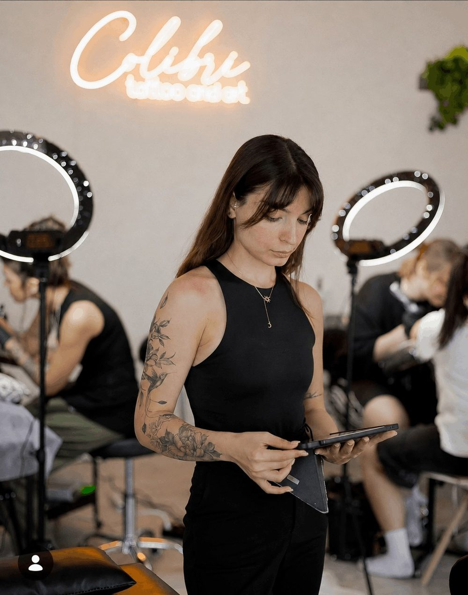
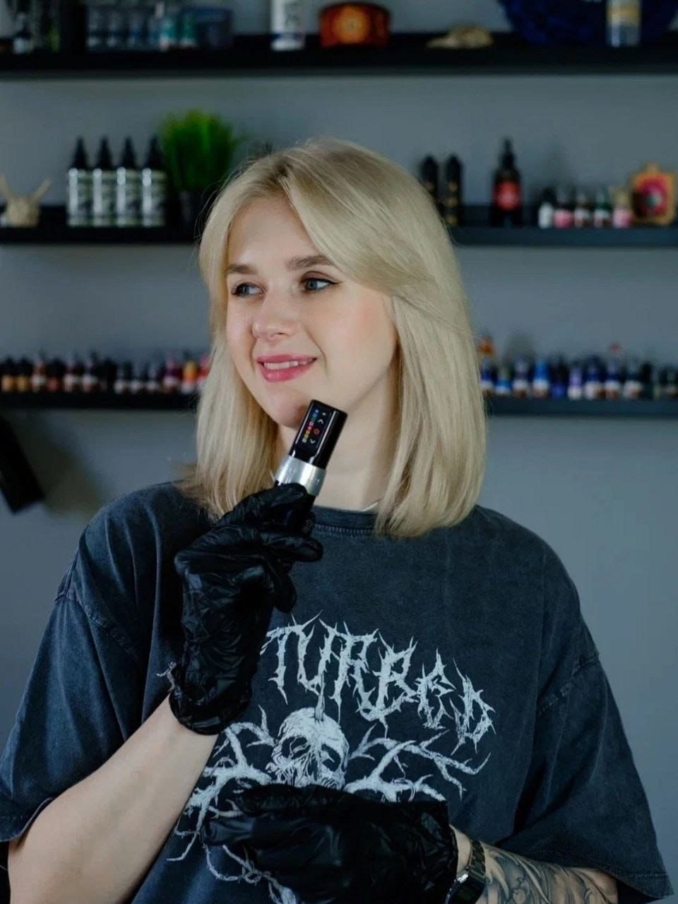
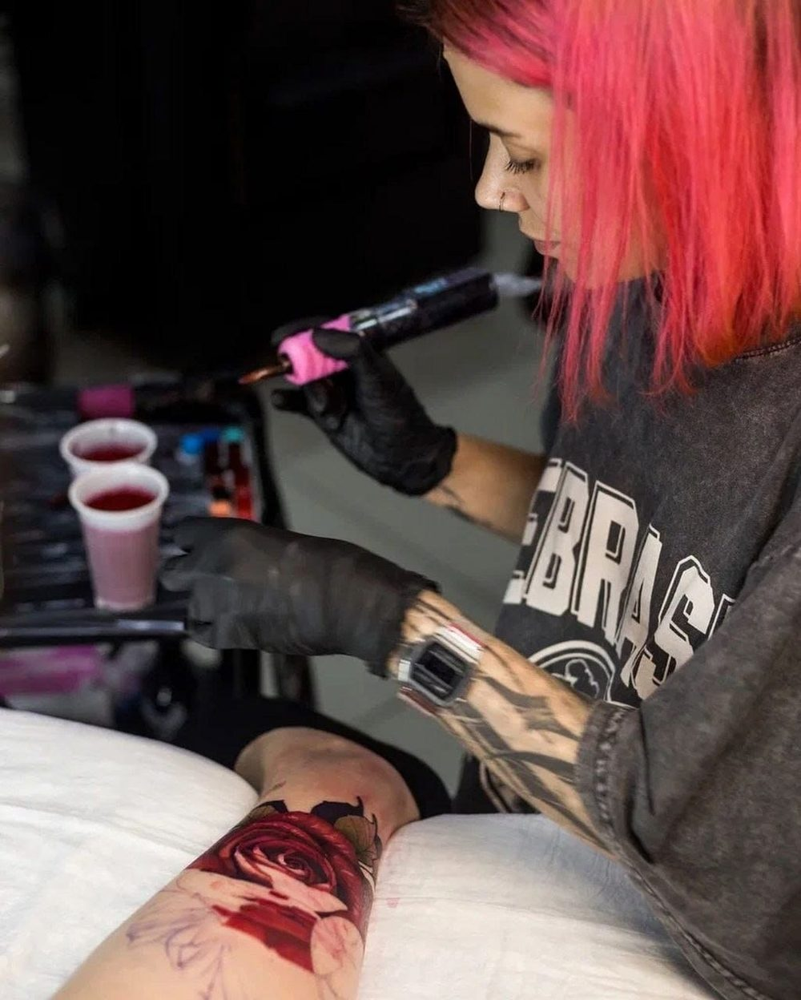
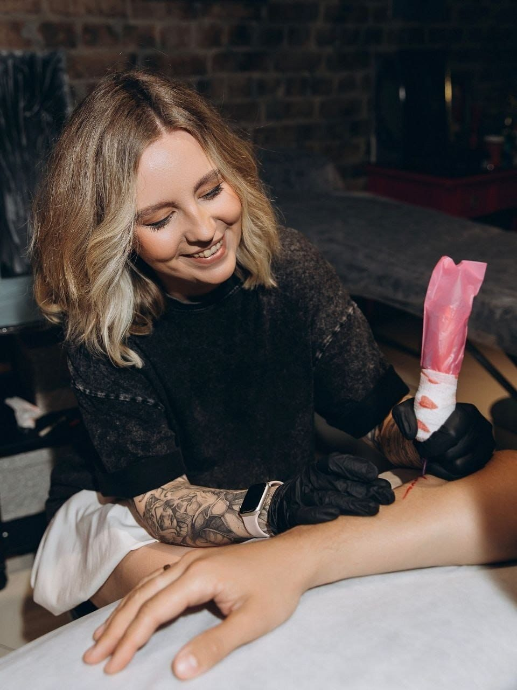
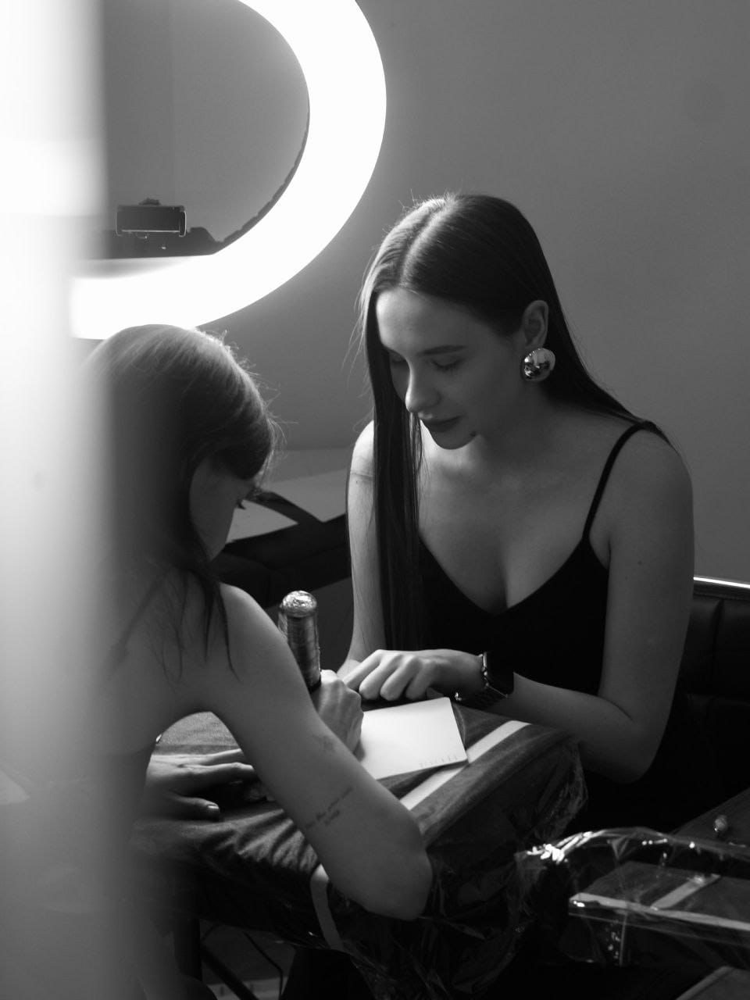
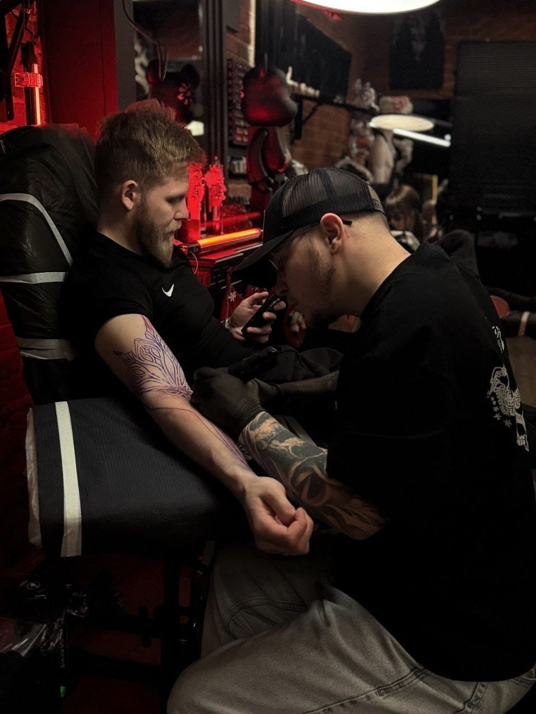
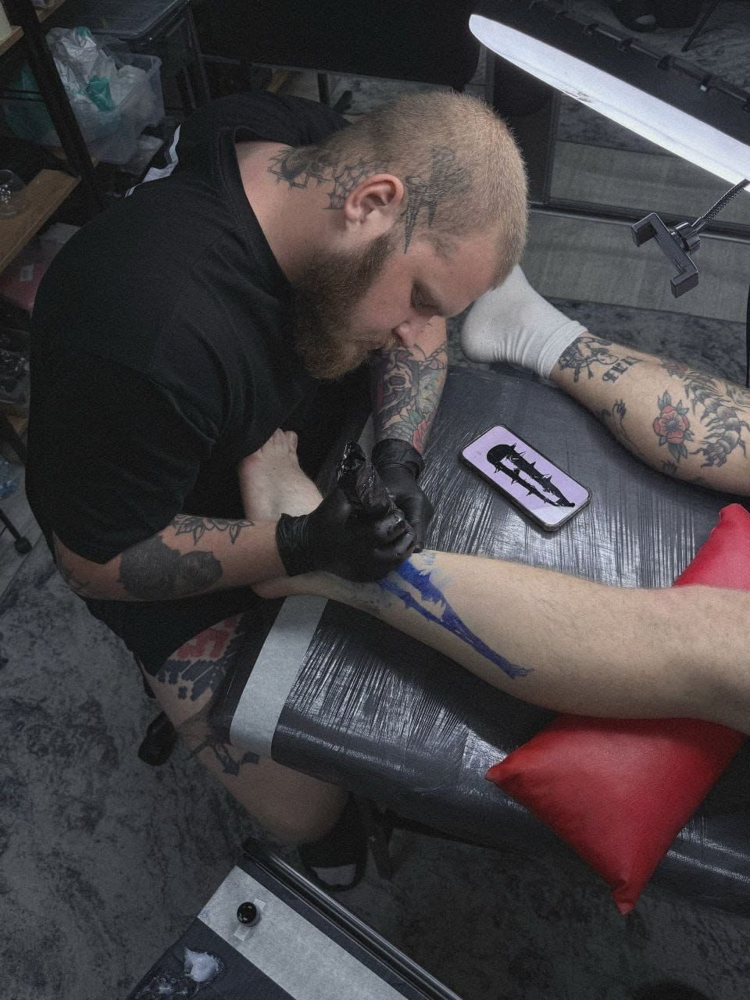
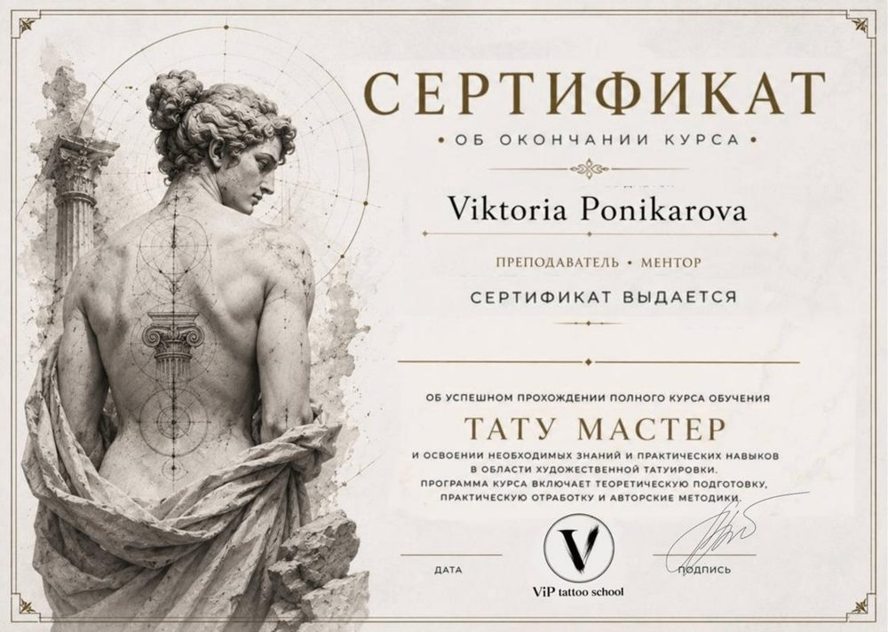

День1
Старт і безпека
- Як насправді виглядає професія тату-майстра
- Стерилізація, гігієна і організація робочого місця
- Список обладнання для старту: що купувати, а що ні
Зрозумієш, з чого складається робота майстра, і не витратиш гроші даремно.
Хочеш у тату, але не знаєш, з чого почати, і боїшся дорогих помилок? За 5 днів ти зробиш перші лінії на штучній шкірі й зрозумієш, чи твоя це професія.
Доступ одразу після оплати · 14 днів гарантія повернення коштів

Якщо впізнав себе хоча б в одному пункті — цей міні-курс для тебе.
Здається, що спершу треба ідеально малювати, купити дороге обладнання або «дочекатися моменту». Місяці йдуть, а першого кроку так і немає.
Один майстер радить одне, інший — інше. Інформації багато, а розуміння, з чого починати, немає. Ментора теж немає.
Страх помилки й шкоди клієнту тримає на місці. Теорія є, а до практики справа не доходить.
Ти думаєш, що тату — лише для тих, хто малює від природи. Насправді це техніка і практика, а їх можна відпрацювати.
Кожного дня — новий урок і практичне завдання на штучній шкірі. 30–60 хвилин на день.
Зрозумієш, з чого складається робота майстра, і не витратиш гроші даремно.
Розберешся в обладнанні й принципі роботи зі шкірою.
Виконаєш свої перші лінії на штучній шкірі.
Створиш ескіз за допомогою AI і зробиш за ним практику.
Матимеш чіткий план: що відпрацьовувати далі.
Перелік того, що справді потрібне на початку. Базовий набір для навчання на штучній шкірі коштує від 60–80 €.
Допомагає створювати й допрацьовувати ескізи, шукати ідеї та швидше вирішувати робочі задачі. Працює на даних курсу і студії Sarna.
Шаблон для розрахунку ціни роботи, щоб не працювати собі в збиток.
Готові ескізи в різних стилях, з якими можна практикувати одразу.
Учні школи з різних країн. Усі почали з нуля.







Stripe: безпечна оплата карткою. Одразу отримуєш доступ у Telegram.
Дивишся короткі відеоуроки у зручний час і одразу переходиш до практики.
Практикуєшся на штучній шкірі й надсилаєш результат.
Вікторія розбирає роботу: що зроблено правильно, де помилки й як їх виправити.
Якщо протягом 14 днів зрозумієш, що курс не підходить, — поверну кошти без зайвих питань. Просто напиши мені. Ти нічим не ризикуєш.
Міні-курс — це перший крок і можливість зрозуміти, чи твоє це. Якщо захочеш рухатись далі, у повній програмі школи ти знайдеш:

Саме для цього й існує міні-курс: зрозуміти, чи підходить тобі ця сфера, без великих вкладень. 14 € і 5 днів. Плюс є 14-денна гарантія повернення коштів.
Ні. Навички малювання не обов'язкові, хоча й вітаються. Тату — це техніка і практика, а не лише талант: постановка руки, контроль глибини, рівномірний рух відпрацьовуються.
Ні. У першому уроці ти отримаєш список обладнання для старту. Базовий набір для навчання на штучній шкірі коштує від 60–80 €.
Орієнтовно 30–60 хвилин на день протягом 5 днів. Новий урок відкривається щодня.
При правильній техніці крові практично не видно. Усі вправи міні-курсу виконуються на штучній шкірі.
Ні, достатньо смартфона: навчання проходить через Telegram, і дивитись уроки та надсилати завдання зручно з телефону.
Навчання доступне з 18 років — це стандартна вимога для роботи в тату-індустрії.
Ти матимеш правильну базу, розуміння принципів і чіткий план розвитку. Для роботи з реальними клієнтами потрібна додаткова практика, але ти знатимеш, що саме відпрацьовувати.
14 € замість 99 €. Доступ одразу після оплати, 14 днів гарантії повернення коштів.
Оплата через Stripe. Усі дані захищені.